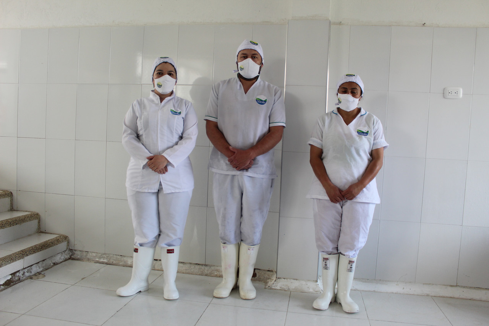

Fresquesito nació en 2009 como respuesta a una crisis. Nuestro fundador, Humberto, transformó la necesidad en oportunidad al empezar a elaborar cuajada artesanal para sus clientes, rescatando la tradición láctea de nuestra región.

Lo que comenzó como una solución local creció hasta convertirse en una marca que honra sus raíces. Nuestro logo representa la emblemática Laguna la Calderona, símbolo de nuestra identidad y frescura.
Nuestra Oferta de Productos
Hoy, nuestra oferta se ha ampliado para llevar lo mejor del campo a tu mesa:
- Queso campesino pasteurizado
- Quesos de pasta hilada (Mozzarella y doble crema)
- Yogur natural y de frutas